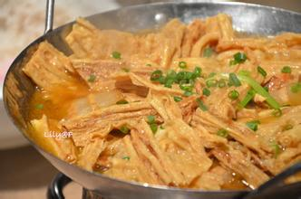

你好，欢迎来到曾玉华的个人网站！
 设为首页
设为首页 加入收藏
加入收藏

南雄-----五岭之首
南雄，广东省历史文化名城，位于广东省东北部，大庾岭南麓，毗邻江西、湖南，自古是岭南通往中原的要道，是粤赣边境的商品集散地，史称“居五岭之首，为江广之冲”、“枕楚跨粤，为南北咽喉”。南北两面群山连绵，中部丘陵沿浈江伸展，形成一狭长盆地，地质学称之为“南雄盆地”。截至2005年12月31日，全市总面积2361.4平方公里，辖17个镇，1个街道，31个居委会，221个村委会，人口47.48万人（2012年）。除雄州及全安、主田、古市等乡镇的部分村落通行城关话外，其余各地均为客家人分布区，占总人口的80.5%。
素有“中国黄烟之乡”、“中国岭南银杏之乡”等美称。市区内雄姿犹存的三影古塔是广东省唯一有绝对年代可考的宋塔；面积达 1800 平方公里的“南雄红层”，是世界上不可多得的标准层之一，恐龙等古生物化石极为丰富，对地质学和古生物学的研究具有相当重要的科学价值。
地质地貌：
南雄市境内四周群山环抱，中部丘陵平原，称“南雄红层盆地”，是远古时代恐龙的故乡。南雄境内地质属燕山期花岗岩体及寒武纪震旦纪变质岩体。四周群山环抱，浈凌二江斜贯腹地。地势为西北高，东南低。西北山区最高峰为观音峰，海拔1429米，南部山区最高山峰为青嶂山，海拔917米。中部为狭长丘陵，自东北向西南沿浈江两岸伸展，直到始兴县马市，称为“南雄红层盆地”。红层下蕴藏着大量的古生物化石。1961年广东区测队采得的晚白垩纪恐龙化石非常珍贵，是全世界研究恐龙的最佳地方。
气候特征：
南雄位于亚欧大陆东南缘，处在北回归线北侧，属亚热带季风湿润气候区，具有四季分明，冬短夏长，秋季过渡快的特点。冬半年受大陆冷性高压控制，气温较低，寒冷少雨，多霜冻、冰冻天气出现，历年平均最低气温皆在1月，盛行东北风，具有大陆性气候特征。夏半年受副热带海洋天气系统影响，盛行西南风，加上南雄地处赭土盆地，具有气温较高，热量充足，雨量颇丰的偏海洋性气候特点。由于市境内地形复杂，地势高低差异，山地气温比平原要低4℃左右，雨量约多10%。
自然资源：
主要资源有矿产、森林、水力、陶土、花岗石、药材等，发展工农业生产的潜力大。现有耕地面积47.1万亩；有林地280万亩，森林覆盖率63.4%，活立木蓄积量580万立方米；毛竹面积36万亩，是广东省毛竹的主要产区之一。主要农作物有水稻、花生、大豆，主要经济作物有黄烟、银杏、田七。素有“黄烟之乡”“银杏之乡”之美誉。 南雄有大小河流110条，多年平均地表径流总量18亿立方米，水能蕴藏量达6.47万千瓦，可开发量近5万千瓦，尚未开发1.2万千瓦。全市库塘水面1467公顷，蓄水量2.1亿立方米，既可发展养殖业，又可发展库区和山涧旅游业。 南雄有丰富的花岗石和红土资源。全市花岗石蕴藏量达2.6亿立方米，品种有17个之多，市内有多家花岗石板材厂。面积达700多平方公里的南雄红土，是烧制防潮砖、彩釉砖的优质原料。 南雄盆地中部的紫色土壤，富含磷、钾，是发展优质烟叶生产得天独厚的条件。南雄日照充足，雨量充沛，所产烟叶色泽金黄，烟味醇香，易燃灰白，素负盛名。南雄有300年的黄烟种植历史，是著名的“中国黄烟之乡”，现被国家烟草公司列为“国际型优质烤烟生产基地”。 南雄有丰富稀土矿产资源，包括比如南雄市主田镇棉土窝的钨、锡、铋、钼矿等以及澜河七四三矿军用铀矿等。
交通：
韶赣高速公路(设梅岭、珠玑、南雄三出口) ；赣韶铁路(设珠玑、南雄、古市三个站点) ；323线国道和省道342线分别贯穿南北东西。市区主干道：雄州大道、金叶大道、教育路、林荫路、环城路等。
特色产业：
粮食生产是南雄的基础产业。改革开放以来，积极推广杂优稻，实行高栽培技术规范化，实现稳产高产。1981年，全县粮食亩产超千斤（市斤），荣列“千斤县”。1993年，南雄县被国家列为“八五”第二批商品粮基地。1995年又被省列为“九五”商品粮基地。1996年，全市稻谷总产23.52万吨，平均亩产1000公斤，步入“吨谷市”行列。[1] 黄烟生产是南雄的支柱产业，改革开放以来，根据市场需要，改良品种，推广烤烟，实行“三化”（种植区域化、品种良种化、栽培技术规范化）生产，产量连年大幅度增产，烟叶质量大大提高。1985年烟叶总产突破万吨，1988年又突破2万吨，1992年达31600吨，14年增长了9倍。收购上来的烤烟，有80%左右为上中等烟叶，畅销国内各大卷烟厂。[1] 南雄种植黄烟已有300多年历史，南雄盆地中部的紫色土地为优质烟叶生产提供了得天独厚的条件，南雄烟叶品质上乘，历来饮誉中外，曾一度远销40多个国家和地区，现内销全国23个大中城市。
地质地貌：
南雄市境内四周群山环抱，中部丘陵平原，称“南雄红层盆地”，是远古时代恐龙的故乡。南雄境内地质属燕山期花岗岩体及寒武纪震旦纪变质岩体。四周群山环抱，浈凌二江斜贯腹地。地势为西北高，东南低。西北山区最高峰为观音峰，海拔1429米，南部山区最高山峰为青嶂山，海拔917米。中部为狭长丘陵，自东北向西南沿浈江两岸伸展，直到始兴县马市，称为“南雄红层盆地”。红层下蕴藏着大量的古生物化石。1961年广东区测队采得的晚白垩纪恐龙化石非常珍贵，是全世界研究恐龙的最佳地方。
气候特征：
南雄位于亚欧大陆东南缘，处在北回归线北侧，属亚热带季风湿润气候区，具有四季分明，冬短夏长，秋季过渡快的特点。冬半年受大陆冷性高压控制，气温较低，寒冷少雨，多霜冻、冰冻天气出现，历年平均最低气温皆在1月，盛行东北风，具有大陆性气候特征。夏半年受副热带海洋天气系统影响，盛行西南风，加上南雄地处赭土盆地，具有气温较高，热量充足，雨量颇丰的偏海洋性气候特点。由于市境内地形复杂，地势高低差异，山地气温比平原要低4℃左右，雨量约多10%。
自然资源：
主要资源有矿产、森林、水力、陶土、花岗石、药材等，发展工农业生产的潜力大。现有耕地面积47.1万亩；有林地280万亩，森林覆盖率63.4%，活立木蓄积量580万立方米；毛竹面积36万亩，是广东省毛竹的主要产区之一。主要农作物有水稻、花生、大豆，主要经济作物有黄烟、银杏、田七。素有“黄烟之乡”“银杏之乡”之美誉。 南雄有大小河流110条，多年平均地表径流总量18亿立方米，水能蕴藏量达6.47万千瓦，可开发量近5万千瓦，尚未开发1.2万千瓦。全市库塘水面1467公顷，蓄水量2.1亿立方米，既可发展养殖业，又可发展库区和山涧旅游业。 南雄有丰富的花岗石和红土资源。全市花岗石蕴藏量达2.6亿立方米，品种有17个之多，市内有多家花岗石板材厂。面积达700多平方公里的南雄红土，是烧制防潮砖、彩釉砖的优质原料。 南雄盆地中部的紫色土壤，富含磷、钾，是发展优质烟叶生产得天独厚的条件。南雄日照充足，雨量充沛，所产烟叶色泽金黄，烟味醇香，易燃灰白，素负盛名。南雄有300年的黄烟种植历史，是著名的“中国黄烟之乡”，现被国家烟草公司列为“国际型优质烤烟生产基地”。 南雄有丰富稀土矿产资源，包括比如南雄市主田镇棉土窝的钨、锡、铋、钼矿等以及澜河七四三矿军用铀矿等。
交通：
韶赣高速公路(设梅岭、珠玑、南雄三出口) ；赣韶铁路(设珠玑、南雄、古市三个站点) ；323线国道和省道342线分别贯穿南北东西。市区主干道：雄州大道、金叶大道、教育路、林荫路、环城路等。
特色产业：
粮食生产是南雄的基础产业。改革开放以来，积极推广杂优稻，实行高栽培技术规范化，实现稳产高产。1981年，全县粮食亩产超千斤（市斤），荣列“千斤县”。1993年，南雄县被国家列为“八五”第二批商品粮基地。1995年又被省列为“九五”商品粮基地。1996年，全市稻谷总产23.52万吨，平均亩产1000公斤，步入“吨谷市”行列。[1] 黄烟生产是南雄的支柱产业，改革开放以来，根据市场需要，改良品种，推广烤烟，实行“三化”（种植区域化、品种良种化、栽培技术规范化）生产，产量连年大幅度增产，烟叶质量大大提高。1985年烟叶总产突破万吨，1988年又突破2万吨，1992年达31600吨，14年增长了9倍。收购上来的烤烟，有80%左右为上中等烟叶，畅销国内各大卷烟厂。[1] 南雄种植黄烟已有300多年历史，南雄盆地中部的紫色土地为优质烟叶生产提供了得天独厚的条件，南雄烟叶品质上乘，历来饮誉中外，曾一度远销40多个国家和地区，现内销全国23个大中城市。
-

-

- 